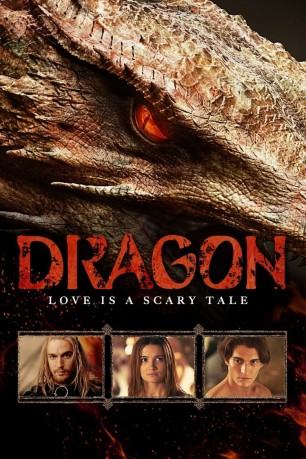

Alternativ: I Am Dragon (Englischer Titel)
 
 IMDB-Wertung: 6.9 / 10
IMDB-Wertung: 6.9 / 10  Metascore:
Metascore: 
Die wunderschöne Prinzessin Miroslava gerät am Tag ihrer Hochzeit in die Fänge eines Drachen, der sie auf eine einsame Insel verschleppt. Zwar lässt das Ungetüm sie unbeschadet zurück, doch nun ist sie vollkommen auf sich allein gestellt. Während ihrer Erkundungen trifft sie dann aber auf jemanden, der schon viel länger auf der Insel zu leben scheint: Sie fühlt sich zu dem mysteriösen Arman sofort hingezogen, ahnt allerdings auch, dass er ein dunkles Geheimnis verbirgt. Igor, Miroslavas Verlobter und der Enkel eines legendären Drachentöters, hat derweil bereits die Verfolgung aufgenommen, um den Drachen zu besiegen und seine Braut zurückzubringen.
Jahr: 2015
Dauer: 107 Minuten
FSK: 12
Land: Russland Studio: Splendid FilmTonspuren: DTS - ,
Untertitel: Deutsch,
Auflösung: 1080p (1920x816) Größe: 4843 MB
Genre: Abenteuer, Fantasy, Liebe
Regisseur: Indar Dzhendubaev
Drehbuch: Aleksey Arsenev, Marina Dyachenko, Sergey Dyachenko, Indar Dzhendubaev
Soundtrack: Simon Finley
Darsteller:
Datei: X:\2015(A-F)\Dragon - Love Is a Scary Tale (2015, FSK12, 1920x816) 3D.mkv seit 24.04.2019
Festplatte: HD 2015(A-Z)
 Es gibt insgesamt 143 Filme in der Gruppe '2015(A-F)'
Es gibt insgesamt 143 Filme in der Gruppe '2015(A-F)'